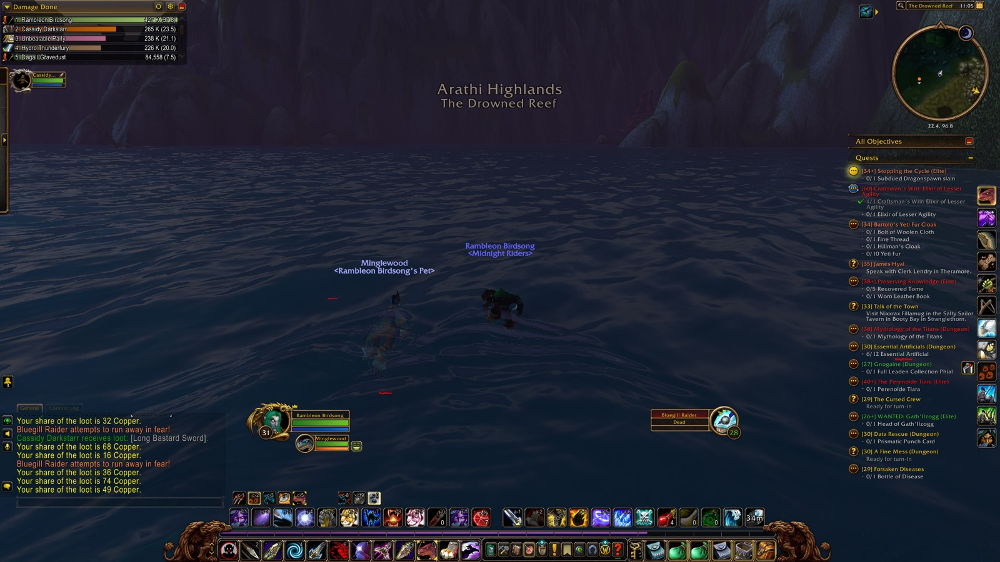

244 moments, in order · fold
- 8:35 PM — Began the adventure
- 8:35 PM — Entered Trade District (Stormwind City)
- 8:36 PM — Entered The Canals (Stormwind City)
- 8:37 PM — Entered Old Town (Stormwind City)
- 8:37 PM — Entered SI:7 (Stormwind City)
- 8:38 PM — Completed "The Head of the Beast"
- 8:38 PM — Accepted "Brotherhood's End"
- 8:38 PM — Entered Old Town (Stormwind City)
- 8:39 PM — Entered The Canals (Stormwind City)
- 8:40 PM — Entered Cathedral Square (Stormwind City)
- 8:40 PM — Completed "Brotherhood's End"
- 8:40 PM — Accepted "An Audience with the King"
- 8:40 PM — Deliver Baros Alexston's report on the Defias Brotherhood to King Varian Wrynn in Stormwind Keep. — "An Audience with the King"
- 8:40 PM — Entered The Canals (Stormwind City)
- 8:42 PM — Entered Old Town (Stormwind City)
- 8:43 PM — Entered The Canals (Stormwind City)
- 8:43 PM — Entered Stormwind Keep (Stormwind City)
- 8:43 PM — Completed "An Audience with the King"
- 8:43 PM — Looted Seal of Wrynn (Rare)
- 8:44 PM — Entered The Canals (Stormwind City)
- 8:44 PM — Entered Dwarven District (Stormwind City)
- 8:44 PM — Entered The Canals (Stormwind City)
- 8:45 PM — Entered Old Town (Stormwind City)
- 8:46 PM — Hearthed home to Southshore
- 8:46 PM — Joined forces with Cassidy (Druid)
- 8:46 PM — Entered Southshore (Hillsbrad Foothills)
- 8:47 PM — Completed "Southshore"
- 8:47 PM — Accepted "Preserving Knowledge"
- 8:47 PM — Flew from Southshore to Menethil Harbor, Wetlands
- 8:47 PM — Entered Eastern Strand (Hillsbrad Foothills)
- 8:48 PM — Entered The Great Sea (Hillsbrad Foothills)
- 8:48 PM — Entered The Great Sea (Wetlands)

8:48 PM — Entered Wetlands - 8:48 PM — Entered Baradin Bay (Wetlands)
- 8:49 PM — Entered Menethil Harbor (Wetlands)
- 8:50 PM — Entered Deepwater Tavern (Wetlands)
- 8:51 PM — Accepted "James Hyal"
- 8:51 PM — Entered Menethil Harbor (Wetlands)
- 8:53 PM — Entered Menethil Bay (Wetlands)
- 8:53 PM — Entered Wetlands
- 8:54 PM — Overheard in Wetlands: Cassidy Darkstarr, Thunder Clapman, Silent Slaghter and 3 others (13 lines)
- 8:58 PM — Entered Bluegill Marsh (Wetlands)
- 8:58 PM — Entered Sundown Marsh (Wetlands)
- 8:59 PM — Entered Wetlands
- 9:00 PM — Entered Angerfang Encampment (Wetlands)
- 9:00 PM — First Dragonmaw Raider slain
- 9:02 PM — First Dragonmaw Swamprunner slain
- 9:03 PM — First Dragonmaw Bonewarder slain
- 9:04 PM — First Skeleton slain
- 9:04 PM — Looted Sage's Mantle of the Channeler (Uncommon)
- 9:08 PM — Looted Emblazoned Gloves (Uncommon)
- 9:08 PM — First Dragonmaw Centurion slain
- 9:09 PM — First Dragonmaw Shadowwarder slain
- 9:10 PM — Looted Banded Bracers of Stamina (Uncommon)
- 9:13 PM — First Garneg Charskull (rare) slain
- 9:14 PM — Looted Sage's Sash of Stamina (Uncommon)
- 9:15 PM — Entered Wetlands
- 9:16 PM — Abandoned "Blisters on the Land"
- 9:20 PM — Entered The Green Belt (Wetlands)
- 9:21 PM — Entered Wetlands
- 9:21 PM — Joined forces with Vaowyn (Priest)
- 9:22 PM — Entered Dragonmaw Retreat (Wetlands)
- 9:22 PM — Entered Mosshide Fen (Wetlands)
- 9:23 PM — Entered Wetlands
- 9:23 PM — Entered The Green Belt (Wetlands)
- 9:23 PM — Entered Wetlands
- 9:24 PM — Entered Angerfang Encampment (Wetlands)
- 9:25 PM — Entered Wetlands
- 9:25 PM — Entered Angerfang Encampment (Wetlands)
- 9:26 PM — Entered Wetlands
- 9:27 PM — Entered The Green Belt (Wetlands)
- 9:27 PM — Entered Wetlands
- 9:27 PM — Entered The Green Belt (Wetlands)
- 9:27 PM — First Dragonmaw Soulbinder (elite) slain
- 9:28 PM — First Dragonmaw Reclaimer (elite) slain
- 9:28 PM — Entered Wetlands
- 9:28 PM — A scene in Wetlands with Maranos Othmar (2 lines)
- 9:28 PM — Joined forces with Tyler (Paladin)
- 9:28 PM — Joined forces with Maranos (Warrior)
- 9:28 PM — Entered The Green Belt (Wetlands)
- 9:28 PM — Entered Wetlands
- 9:29 PM — First Maddened Rotclaw slain
- 9:29 PM — Joined forces with Lilith (Druid)
- 9:29 PM — First Dragonmaw Infiltrator (elite) slain
- 9:30 PM — Entered Dragonmaw Retreat (Wetlands)
- 9:31 PM — First Succubus Minion slain
- 9:31 PM — Parted ways with Lilith
- 9:33 PM — Entered The Green Belt (Wetlands)
- 9:33 PM — Parted ways with Maranos
- 9:34 PM — Entered Dragonmaw Retreat (Wetlands)
- 9:35 PM — Parted ways with Cassidy
- 9:35 PM — Parted ways with Vaowyn
- 9:35 PM — Parted ways with Tyler
- 9:35 PM — Joined forces with Neilson (Shaman)
- 9:35 PM — Joined forces with Lilith (Druid)
- 9:35 PM — Joined forces with Chew (Druid)
- 9:36 PM — Joined forces with Tyler (Paladin)
- 9:37 PM — Looted Sealed Journeyman's Writ (Rare)
- 9:37 PM — Looted Craftsman's Writ: Elixir of Lesser Agility (Rare)
- 9:37 PM — Accepted "Craftsman's Writ: Elixir of Lesser Agility"
- 9:37 PM — 1/1 Craftsman's Writ: Elixir of Lesser Agility — "Craftsman's Writ: Elixir of Lesser Agility"
- 9:37 PM — First Crimson Whelp slain
- 9:38 PM — 8/8 Dragonmaw Reclaimer slain — "Death to the Dragonmaw"
- 9:41 PM — Looted Double Link Tunic (Rare)
- 9:43 PM — Parted ways with Lilith
- 9:43 PM — 5/5 Dragonmaw Soulbinder slain — "Death to the Dragonmaw"
- 9:43 PM — Parted ways with Chew
- 9:44 PM — Entered The Green Belt (Wetlands)
- 9:44 PM — Parted ways with Tyler
- 9:45 PM — Parted ways with Neilson
- 9:52 PM — First Flamesnorting Whelp slain
- 9:53 PM — Entered Dragonmaw Retreat (Wetlands)
- 9:53 PM — Entered Wetlands
- 9:54 PM — Entered Mosshide Fen (Wetlands)
- 9:55 PM — Entered Wetlands
- 9:55 PM — Entered The Green Belt (Wetlands)
- 9:55 PM — Entered Wetlands
- 9:55 PM — Entered The Green Belt (Wetlands)
- 9:55 PM — Entered Wetlands
- 9:55 PM — Completed "Death to the Dragonmaw"
- 9:56 PM — Accepted "Stopping the Cycle"
- 9:58 PM — Entered Sundown Marsh (Wetlands)
- 9:59 PM — Joined forces with Cassidy (Druid)
- 9:59 PM — Joined forces with Vaowyn (Priest)
- 10:00 PM — Entered Wetlands
- 10:01 PM — Entered Ironbeard's Tomb (Wetlands)
- 10:01 PM — Entered Wetlands
- 10:01 PM — Entered The Green Belt (Wetlands)
- 10:01 PM — Entered Wetlands
- 10:02 PM — Entered The Green Belt (Wetlands)
- 10:02 PM — Entered Direforge Hill (Wetlands)
- 10:02 PM — Entered The Green Belt (Wetlands)
- 10:02 PM — Entered Direforge Hill (Wetlands)
- 10:02 PM — Entered The Green Belt (Wetlands)
- 10:02 PM — Entered Direforge Hill (Wetlands)
- 10:02 PM — Entered The Green Belt (Wetlands)
- 10:02 PM — Entered Direforge Hill (Wetlands)
- 10:03 PM — Entered The Green Belt (Wetlands)
- 10:03 PM — Entered Raptor Ridge (Wetlands)
- 10:03 PM — First Highland Razormaw slain
- 10:04 PM — Entered The Green Belt (Wetlands)
- 10:05 PM — Entered Wetlands
- 10:06 PM — Entered The Green Belt (Wetlands)
- 10:06 PM — Entered Wetlands
- 10:06 PM — Entered The Green Belt (Wetlands)
- 10:06 PM — Entered Wetlands
- 10:06 PM — Entered The Green Belt (Wetlands)
- 10:06 PM — Entered Wetlands
- 10:07 PM — Entered The Green Belt (Wetlands)
- 10:08 PM — Joined forces with Scáthach (Hunter)
- 10:08 PM — Joined forces with Dagall (Hunter)
- 10:08 PM — Entered Wetlands
- 10:08 PM — Entered The Green Belt (Wetlands)
- 10:09 PM — Entered Dragonmaw Retreat (Wetlands)
- 10:20 PM — 30/30 Dragonmaw Armaments — "Forced Disarmament"
- 10:23 PM — Entered Dragonmaw Gates (Wetlands)
- 10:30 PM — Slain by Succubus Minion in Dragonmaw Gates
- 10:30 PM — Entered Wetlands
- 10:30 PM — Entered The Green Belt (Wetlands)
- 10:30 PM — Entered Wetlands
- 10:31 PM — Entered The Green Belt (Wetlands)
- 10:31 PM — Parted ways with Vaowyn
- 10:32 PM — Entered Dragonmaw Retreat (Wetlands)
- 10:33 PM — Entered Dragonmaw Gates (Wetlands)
- 10:33 PM — Back among the living
- 10:35 PM — First Ados (elite) slain
- 10:35 PM — Slain by Dragonmaw Infiltrator (elite) in Dragonmaw Gates
- 10:35 PM — Entered Wetlands
- 10:35 PM — Entered The Green Belt (Wetlands)
- 10:35 PM — Back among the living
- 10:35 PM — Entered Dragonmaw Gates (Wetlands)
- 10:39 PM — Hearthed home to Southshore
- 10:39 PM — Entered Southshore (Hillsbrad Foothills)
- 10:40 PM — Flew from Southshore to Menethil Harbor, Wetlands
- 10:40 PM — Entered Eastern Strand (Hillsbrad Foothills)
- 10:40 PM — Entered The Great Sea (Hillsbrad Foothills)
- 10:40 PM — Entered The Great Sea (Wetlands)
- 10:41 PM — Entered Baradin Bay (Wetlands)
- 10:41 PM — Parted ways with Cassidy
- 10:41 PM — Parted ways with Scáthach
- 10:41 PM — Parted ways with Dagall
- 10:41 PM — Entered Menethil Harbor (Wetlands)
- 10:42 PM — Entered Menethil Keep (Wetlands)
- 10:43 PM — Completed "Forced Disarmament"
- 10:43 PM — Entered Menethil Harbor (Wetlands)
- 10:44 PM — Entered Deepwater Tavern (Wetlands)
- 10:45 PM — Entered Menethil Harbor (Wetlands)
- 10:45 PM — Entered Menethil Bay (Wetlands)
- 10:45 PM — Entered Wetlands
- 10:46 PM — Entered Baradin Bay (Wetlands)
- 10:46 PM — Entered Wetlands
- 10:46 PM — Entered Bluegill Marsh (Wetlands)
- 10:47 PM — Entered The Lost Fleet (Wetlands)
- 10:47 PM — Discovered The Lost Fleet
- 10:47 PM — Discovered The Lost Fleet
- 10:47 PM — Joined forces with Cassidy (Druid)
- 10:47 PM — First Cursed Sailor slain
- 10:49 PM — First Cursed Marine slain
- 10:53 PM — 5/5 Cursed Marine slain — "The Cursed Crew"
- 10:55 PM — 13/13 Cursed Sailor slain — "The Cursed Crew"
- 10:57 PM — First First Mate Snellig slain
- 10:57 PM — 1/1 Snellig's Snuffbox — "The Cursed Crew"
- 10:57 PM — Entered Bluegill Marsh (Wetlands)
- 10:57 PM — Entered The Lost Fleet (Wetlands)
- 10:57 PM — Entered Bluegill Marsh (Wetlands)
- 10:58 PM — Entered The Lost Fleet (Wetlands)
- 10:58 PM — Entered Sundown Marsh (Wetlands)
- 10:58 PM — Entered The Lost Fleet (Wetlands)
- 10:58 PM — Entered Sundown Marsh (Wetlands)
- 10:58 PM — Entered The Lost Fleet (Wetlands)
- 10:58 PM — Entered Sundown Marsh (Wetlands)
- 10:58 PM — Entered Baradin Bay (Wetlands)
- 10:58 PM — Entered Sundown Marsh (Wetlands)
- 10:58 PM — Entered Baradin Bay (Wetlands)
- 10:58 PM — First Giant Wetlands Crocolisk slain
- 10:58 PM — First Bluegill Raider slain
- 11:00 PM — Entered Sundown Marsh (Wetlands)
- 11:00 PM — Entered Baradin Bay (Wetlands)
- 11:05 PM — Entered The Drowned Reef (Arathi Highlands)

11:05 PM — Entered Arathi Highlands - 11:05 PM — Discovered The Drowned Reef
- 11:06 PM — Entered Baradin Bay (Wetlands)
- 11:06 PM — Entered The Drowned Reef (Arathi Highlands)
- 11:07 PM — Entered Baradin Bay (Wetlands)
- 11:08 PM — Entered Saltspray Glen (Wetlands)
- 11:08 PM — Entered Baradin Bay (Wetlands)
- 11:08 PM — Entered Saltspray Glen (Wetlands)
- 11:08 PM — Entered Baradin Bay (Wetlands)
- 11:08 PM — Entered Sundown Marsh (Wetlands)
- 11:14 PM — Entered Bluegill Marsh (Wetlands)
- 11:15 PM — Entered Wetlands
- 11:15 PM — Entered Menethil Bay (Wetlands)
- 11:17 PM — Entered Menethil Harbor (Wetlands)
- 11:17 PM — Completed "The Cursed Crew"
- 11:17 PM — Accepted "Lifting the Curse"
- 11:18 PM — Flew from Menethil Harbor to Southshore, Hillsbrad
- 11:18 PM — Entered Baradin Bay (Wetlands)
- 11:19 PM — Entered The Great Sea (Wetlands)
- 11:19 PM — Entered The Great Sea (Hillsbrad Foothills)
- 11:20 PM — Entered Eastern Strand (Hillsbrad Foothills)
- 11:20 PM — Entered Western Strand (Hillsbrad Foothills)
- 11:20 PM — Entered Southshore (Hillsbrad Foothills)
- 11:21 PM — Accepted "Costly Menace"